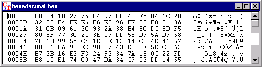

Ten typ okna jest u¿ywany do prezentacji dokumentów sk³adaj¹cych siê z danych niemo¿liwych do przedstawienia w formie graficznej, b¹dŸ tekstowej.
W tym typie dokumentów mo¿liwoœci edycyjne s¹ ograniczone (patrz menu Edycja): d³ugoœæ tekstu musi zostaæ zachowana. Znaki mog¹ byæ nadpisywane, ale nie usuwane lub dodawane. Opcja Edycja \ Wytnij nie dzia³a. Dzia³anie poleceñ Kopiuj i Wklej jest równie¿ ograniczone. Dozwolone s¹ operacje nie zmieniaj¹ce d³ugoœci dokumentu.
Okno szesnastkowego wejœcia i wyjœcia jest zaprojektowane nastêpuj¹co:
W pierwszej kolumnie znajduje siê liczba szesnastkowa z pozycj¹ znaków prezentowanych w dwóch innych kolumnach.
W drugiej kolumnie dane s¹ prezentowane w formie szesnastkowej. (patrz tablica ASCII).Jeden znak jest reprezentowany przez dwa znaki z zakresu (0, 1,..., 9, A, B,..., F).
W trzeciej kolumnie znaki s¹ pokazywane zgodnie z ich kodem ASCII. Znaki niemo¿liwe do przedstawienia s¹ reprezentowane przez kropkê.
Je¿eli szesnastkowa wartoœæ znaku jest zmieniona to pokazywany jest zmodyfikowany znak ASCII.

Dokumenty bez specjalnych znaków s¹ wyœwietlane w oknie z wejœciem i wyjœciem tekstowym..
Mo¿liwa jest zmiana innego trybu wyœwietlania do okna z wejœciem i wyjœciem tekstowym. poprzez zaznaczenie w menu opcji Widok \ Poka¿ jako tekst (Notatka: doprowadza to do straty wszystkich znaków za pierwszymi znakiem 'NULL' który w tym formacie oznacza koniec pliku).
Uwaga:
Wartoœci (dziesiêtne i szesnastkowe) innych znaków ASCII mo¿na znaleŸæ w tablicy ASCII.